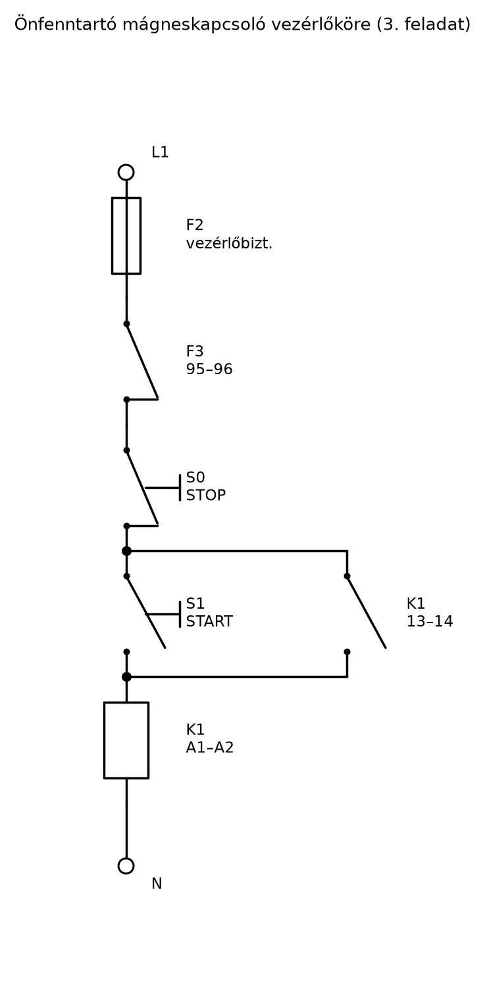

![Fázisjavító kondenzátorfokozat bekötése (háromvonalas elvi rajz) - A gyűjtősínről a háromsarkú Q1 szakaszolókapcsolón, az F1–F3 olvadóbiztosítókon és a K1 fokozatkapcsoló kontaktoron át kapcsolódik a deltába kötött C1–C3 kondenzátorfokozat; mindegyik kondenzátorral párhuzamosan egy kisütő ellenállás (R1–R3) van, amely a lekapcsolt kondenzátort kisüti (ellenőrizendő: a kisütési időre és maradékfeszültségre vonatkozó előírás, MSZ EN 60831). Elvi vázlat, nem kivitelezési rajz; a fém tokozat PE-bekötése nincs feltüntetve.](assets/ve157-diagram-1.png)
A mintafeladatsor akkor éri el a célját, ha utánozza a vizsga helyzetét, és utána a megoldásból pontosan látod, melyik témakörben kell ismételned. Ezt a feladatsort úgy építettem fel, hogy lefedje a teljes eddigi tananyagot: alapfogalmak, hálózatszámítás, vezetékméretezés, fázisjavítás, gépek, védelmek, mérések, rajzolvasás és vezérlések. A megoldások nem csak a végeredményt adják meg, hanem a gondolkodás menetét is, ezért a hibaelemzés után pontosan láthatod, mit gyakorolj még.
Gyakorlati szabály. A vizsgán először nézd át a teljes feladatsort, és a pontszámok arányában ossz be időt. Ha elakadsz egy feladattal, lépj tovább; a vizsga végén térj vissza hozzá. Minden számításnál írd ki a képletet, a behelyettesítést és a mértékegységet – még akkor is, ha az eredmény hibás, a helyes elv és a mértékegység sok pontot ér.
| Rész | Tartalom | Feladatok | Javasolt idő |
|---|---|---|---|
| A | Alapfogalmak, védelem, mérés | 2×5 rövid kérdés | 25 perc |
| B | Rövid válaszok, rajzolvasás | 3 feladat | 25 perc |
| C | Számolási feladatok | 5 feladat | 50 perc |
| D | Gyakorlati hibakeresés, vezérlésértékelés | 1 feladat | 20 perc |
A minta 100 pontos, a javasolt idő 120 perc. A vizsgaidő tájékoztató jellegű; a képzési követelmények szerint ellenőrizendő.
Minden helyes válasz 2 pont, indoklás nélkül is jár, de az órai elemzésben indokold.
A1/A. Melyik vezetékszín jelöli a védővezetőt?
a) barna, b) világoskék, c) zöld-sárga, d) szürke
Megoldás: c) zöld-sárga. A barna/fekete/szürke a fázis,
a világoskék a nulla.
A1/B. Melyik készülék nyújt 30 mA érzékenységgel
kiegészítő védelmet alapvédelmi hiba esetén?
a) olvadóbiztosító, b) kismegszakító, c) áram-védőkapcsoló, d)
hőkioldó
Megoldás: c) áram-védőkapcsoló (RCD). A
névleges hibaáramú kivitel a személyvédelmi célú kiegészítő védelem.
A1/C. Hány volt a vonali feszültség a hazai 230/400
V-os hálózatban?
a) 230 V, b) 380 V, c) 400 V, d) 420 V
Megoldás: c)
.
A1/D. Mekkora a hatásos teljesítmény, ha
,
,
?
a) 2,3 kW, b) 23 kW, c) 4,6 kW, d) 0,23 kW
Megoldás: a)
.
A1/E. A motor pólusszáma
,
a hálózati frekvencia 50 Hz. Mekkora a szinkron fordulatszám?
a) 750 1/min, b) 1000 1/min, c) 1500 1/min, d) 3000 1/min
Megoldás: c)
,
mert
pólus esetén a póluspárszám
.
Minden válasz 2 pont.
A2/A. Mi a célja a hurokimpedancia mérésének
TN-rendszerben?
Megoldás: Annak ellenőrzése, hogy a védőeszköz a
megengedett időn belül leold-e:
,
ahol
a hibahurok impedancia,
a védő kioldási árama,
.
A2/B. Milyen feszültséggel mérjük jellemzően az
épületvillamos berendezés szigetelési ellenállását?
Megoldás: 500 V egyenfeszültséggel. A határértékek
szabvány szerint változhatnak, ezért a mérési jegyzőkönyvben a
ténylegesen alkalmazott követelményt kell rögzíteni
(ellenőrizendő: aktuális MSZ HD 60364-6 és a
vizsgakövetelmény).
A2/C. Mit jelent az IP44 jelölés második
számjegye?
Megoldás: A második számjegy a víz elleni védettséget
jelöli; a 4 fröccsenő víz elleni védelmet jelent. Az első számjegy a
szilárd testek elleni védelmet jelzi, itt 1 mm-nél nagyobb tárgyak
ellen.
A2/D. Melyik hálózati rendszerben van külön PE és N
vezető a teljes fogyasztói hálózaton?
Megoldás: TN-S rendszerben. TN-C-S-ben a csatlakozási
hely után válik szét a PEN; a fogyasztói oldalon már szintén külön kell
vezetni a PE-t és N-t.
A2/E. Mi a célja a mérési kategória (CAT) jelölésnek
a multiméteren?
Megoldás: Megmutatja, hogy a műszer milyen hálózati
környezetben használható biztonságosan, mekkora tranziens feszülcsúcsot
képes elviselni. Ipari elosztóban CAT III vagy CAT IV szükséges.
Feladat (8 pont). Párosítsd a fogalmat a jellemző készülékkel vagy szerepével, és indokold egy mondatban!
Megoldás:
alapvédelem → b, mert a feszültség alatti részek közvetlen érintését
gátolja;
hibavédelem → d, mert hiba esetén a védőeszköz leválaszt;
túláramvédelem → a, mert a védőeszköz névleges árama nem lehet nagyobb a
vezeték terhelhetőségénél;
kiegészítő védelem → c, mert többletvédelmet ad.
Feladat (8 pont). Írd fel a vezeték méretezésénél használt két legfontosabb szabályt, és magyarázd el egy konkrét, üzemi áramú, terhelhetőségű vezetéknél.
Megoldás:
A méretezési alapelvek az
és a védő egyezményes kioldóáramára vonatkozó második feltétel
(ellenőrizendő: MSZ HD 60364-4-43).
A tanulható alak:
ahol az üzemi áram, a védő névleges árama, a vezeték tartós terhelhetősége, a védő kioldó áramának szabványos egyezményes értéke. Példa: üzemi áram, → vagy választható. Kismegszakítónál teljesül ( esetén automatikusan). A védő a zárlati és hurokimpedancia-vizsgálat után megfelelő.
A fogalmi megfogalmazás mellett a képlet pontosságánál nem szabad olyan értéket kimondani, amit a szabványkiadás módosíthat; a mértékegység-ellenőrzés mindig helyes.
Feladat (12 pont). Az alábbi kapcsolást építed meg tanműhelyben: S0 nyitó nyomógomb (STOP), S1 záró nyomógomb (START), K1 mágneskapcsoló A1/A2 tekercs, a 13/14 segédzáró párhuzamosan az S1-gyel, és a 95/96 hőkioldó nyitó érintkező sorba kötve a tekercskörrel. Bekapcsoláskor a motor elindul, de a nyomógomb elengedésekor azonnal leáll. Rajzold le, mi a hiba, és milyen méréssel igazolod?
Megoldás: A nyomógomb elengedése után kizárólag az önfenntartó 13/14 érintkező tarthatná meg a K1 tekercset. A hiba az, hogy a 13/14 segédkapocs nem párhuzamos az S1 kapcsolóval, vagy a segédzáró érintkezője nem zár rendesen.
Méréssel: feszültségmentes állapotban csengessük ki az S1 kötéspontjaitól a K1 13/14 kapcsokig. Ha a huzalozás helyes, feszültségmentes állapotban a mágneskapcsoló mozgó részét kézzel (vagy a próbabenyomóval) behúzva a 13/14 kapcsok között közel -ot, elengedve szakadást kell mérni. Tipikus hiba, hogy a 13/14 nem zár, mert a segédérintkező-blokk mechanikus kapcsolata megszakadt vagy az érintkező szorul, illetve a K1 14-es kapcsára nem kötöttük be az S1 14-es kapcsától (a tekercs A1 felől) jövő vezetéket.
Biztonsági korlát. A feladat tanműhelyi környezetre vagy jogosult oktató felügyeletére vonatkozik; hálózati feszültségen önállóan ne végezd.
Feladat (8 pont). Két áramkört közös elosztóban, kikapcsolt állapotban vizsgálsz. Az első szigetelési ellenállása , a másodiké . Ha a két mért áramkört párhuzamosan kapcsolva méred, mekkora eredő ellenállást várhatsz?
Adott:
,
Keresett:
Képlet: párhuzamos kapcsolás:
Behelyettesítés:
Ellenőrzés: kisebb a -nál is, ami párhuzamos kapcsolásnál helyes.
Feladat (8 pont). 230 V-os, áramú áramkört építesz hosszú rézvezetékkel. A megengedett feszültségesés . Mekkora minimális vezető-keresztmetszet kell? .
Adott:
,
,
,
,
.
Keresett:
.
Képlet: Kétvezetős egyfázisú körben a teljes oda-vissza
vezeték hossza
,
így
Behelyettesítés:
Eredmény: A szabványos keresztmetszet-lépcsőből
vezetéket választunk.
Ellenőrzés: A 4 mm²-es vezető ellenállása
,
a feszültségesés
,
ami
,
tehát a megengedett 3% alatt marad.
Feladat (10 pont). Egy aszinkronmotor adattáblája: , , . A cél . Mekkora kondenzátortelep teljesítményt kell beépíteni?
Adott:
,
,
,
.
Keresett:
.
Első lépés: a hálózatból felvett hatásos teljesítmény.
Második lépés: a meddő teljesítmények.
A összefüggésből:
Harmadik lépés: a szükséges kondenzátorteljesítmény.
Eredmény: A legközelebbi szabványos lépcső (, a cél közel teljesül) vagy (); az túlméretezett (maradó meddő , , és a lekapcsolt, kifutó motor önmágnesezése túlfeszültséget okozhat). Egyedi motorkompenzálásnál a kondenzátor ne haladja meg a motor üresjárási meddőjének kb. 90%-át (ellenőrizendő: gyártói adat). Ne kompenzáld a teljes meddőt. Az ábrán egy kondenzátortelep elvi bekötése látható.
A rajzon a három fázisvezető a Q1 szakaszolókapcsolón, az F1–F3 biztosítókon és a K1 fokozatkapcsoló kontaktoron át jut a deltába kötött három kondenzátorhoz (C1: L1–L2, C2: L2–L3, C3: L3–L1); minden kondenzátorral párhuzamosan egy kisütő ellenállás van, így a lekapcsolt fokozat kondenzátorai az ellenálláson keresztül kisülnek.
Feladat (8 pont). Egy 4 pólusú aszinkronmotor adattáblája szerint a névleges fordulatszám , a hálózati frekvencia . Számítsd ki a szinkron fordulatszámot, a szlipet és a forgórészben indukált feszültség frekvenciáját névleges üzemben!
Adott:
pólus, tehát póluspárszám
;
,
.
Keresett:
,
,
.
Szinkron fordulatszám:
Szlip:
Forgórészfrekvencia:
Ellenőrzés: Kis teljesítményű aszinkronmotornál névleges terhelésen a 3–5%-os szlip reális.
Feladat (8 pont). Egy háromfázisú elosztótranszformátor adatai: , , . Mekkora a névleges vonali áram és az elvi zárlati áram a kisfeszültségű kapcsokon, ha a hálózati oldal merevnek tekinthető?
Adott:
,
,
.
Keresett:
és
.
Névleges vonali áram:
Elvi zárlati áram:
Ellenőrzés: , ebből .
Ezért a főelosztó megszakítójának a megszakítóképességét a várható zárlati áramnál nagyobbra kell választani.
Feladat (10 pont). Egy reverzáló motorvezérlésnél a motor csak az egyik irányba indul. A másik irány nyomógombjának megnyomásakor semmi nem történik, és nem is húz be a megfelelő mágneskapcsoló. Ismertesd a hibakeresés lépéseit!
Megoldás: tünet, mérés, lehetséges ok,
javítás.
A hibát a rajz–valóság–mérés hármas szerint
keressük.
Biztonsági korlát. A vezérlési hibakeresés tanműhelyi környezetben vagy jogosult oktató felügyeletével történjen. Hálózati feszültségű munka esetén mindig az öt biztonsági szabályt kell betartani.
A vizsgán nem elég „tudni”, a pontszerzéshez a megoldást is úgy kell leírni, hogy az értékelő követni tudja. A pontszámodat több tényező csökkenti: hiányzó mértékegység, képlet nélküli behelyettesítés, hibás nagyságrend, nem ellenőrzött eredmény, rajzjel helytelen használata, biztonsági lépések elhagyása a gyakorlati feladatban.
A mintafeladatsor után készíts egyszerű hibanaplót:
| Témakör | Feladat | Kapott pont | Hibát okozó ok | Melyik alfejezetet ismételd? |
|---|---|---|---|---|
| Alapfogalmak | A1 | … | … | … |
| Védelem és mérés | A2 | … | … | … |
| Rajzolvasás | B3 | … | … | … |
| Szigetelési ellenállás | C1 | … | … | … |
| Vezetékméretezés | C2 | … | … | … |
| Fázisjavítás | C3 | … | … | … |
| Gépek | C4 | … | … | … |
| Transzformátor | C5 | … | … | … |
| Hibakeresés | D1 | … | … | … |
Hiba 1: a számolásban csak a végeredményt írod
ki.
A vizsgán a levezetés pontot ér. Ha a képlet jó, de a behelyettesítés
hibás, még mindig kapsz részpontot.
Hiba 2: a mértékegységet csak az eredménynél hagyod
el.
A
önmagában nem elég, mert nem tudjuk, miből lett watt. A mértékegység a
fizikai ellenőrzés része.
Hiba 3: a hibakeresésnél rögtön méregetsz, mielőtt elolvasnád
a kapcsolást.
A műszert csak a rajz alapján felállított hipotézis ellenőrzésére
használd; a céltalan méregetés időt és pontot visz el, és véletlen
érintéshez, zárlathoz vezethet.
Hiba 4: a fázisjavításnál az összes meddőt
kompenzálod.
Ez túlkompenzálást és kapacitív üzemet eredményezhet. A méretezésnél a
cél
-t
és a szabályozási tartalékot is figyelembe kell venni.
Megoldások – Önellenőrzés:
1. Hamis. A zöld-sárga szín a védővezetőé; tilos más célra
használni.
2.
.
3. Hamis. 4 pólus esetén a póluspár-szám 2, tehát
.
3000 1/min a 2 pólusú gépnél lenne.
4.
kisebb az üzemi áramnál, ezért a védő tartós üzemben leoldhat; az
feltétel sérül.
5. Feszültségmentesen, ellenállásmérővel a K1 13/14 kapcsain: elengedett
(nem működtetett) mágneskapcsolónál szakadás, a mozgó részt kézzel
benyomva közel 0 Ω.
1. feladat (A). Számítsd ki egy 230 V-os, 6 A-es
fűtőtest ellenállását.
2. feladat (B). Mekkora keresztmetszet kell 230 V, 25
A, 30 m-es körnél, ha a megengedett feszültségesés 4%?
3. feladat (B). Rajzold le szövegesen a szövegben leírt
önfenntartó kapcsolás huzalozási vázlatát.
4. feladat (C). Hasonlítsd össze a TN-S és TN-C-S
rendszer előnyeit a mért hibahurok szempontjából.
5. feladat (C). Egy motor 0,85-ös
teljesítménytényezőről 0,95-re javítása esetén
elektromos felvett teljesítmény mellett mekkora
kell?
6. feladat (D). A motor hőkioldója leold, de a
kismegszakító nem. Milyen mérést végzel, és milyen okra gyanakszol?
1. feladat.
.
2. feladat.
,
,
,
oda-vissza
.
,
a szabványos lépcsőből
választandó.
3. feladat.
Áramút a vezérlőkörben (soros lánc): L1 → F2 vezérlőbiztosító → F3
hőkioldó 95–96 nyitó érintkezője → S0 STOP nyitó nyomógomb (11–12) → [S1
START záró nyomógomb (13–14) párhuzamosan a K1 13–14 segédzáróval] → K1
tekercs A1; K1 A2 → N. A párhuzamos S1 ∥ 13–14 ág a soros lánc része,
ezért a tekercs csak a START megnyomása után kap feszültséget, elengedés
után a 13–14 tartja. A főkörben: L1, L2, L3 → K1 1/3/5 → 2/4/6 →
hőkioldó (F3) → motor U1, V1, W1, a motortest PE-re kötve.

4. feladat.
TN-C-S-ben a csatlakozási pontig közös PEN van, ami anyagmegtakarítást
ad, de a PEN szakadása veszélyes érintési feszültséget és fázis-nulla
rendellenes üzemet okozhat. TN-S-ben már a fogyasztó felé külön PE és N
fut, ami a hibahurok mérésekor stabilabb védővezetői utat ad. A kioldási
feltétel mindkét rendszerben
.
5. feladat.
,
,
.
.
Válassz
fokozatot.
6. feladat.
A hőkioldó leoldása tartós túlterhelésre utal. Mérj áramot lakatfogóval
üzemszerű terhelésnél, és hasonlítsd össze a motor adattáblájával. Ha az
áram a névlegesnél nagyobb, a hőkioldó beállítása alacsony, tengely vagy
hajtás mechanikai túlterhelés, fázishiba, csapágyhiba vagy csökkent
hálózati feszültség lehet. Ha az áram normális, a hőkioldó lehet rosszul
beállított vagy hibás. Mindig az öt biztonsági szabállyal kezdj,
hálózati feszültségen önállóan ne dolgozz.
A villamos szakmai vizsga elméleti része nem csupán ismeretanyagot, hanem a számítások sorrendiségét, a mértékegységek használatát, a kapcsolási rajzok értelmezését és a hibakeresés logikáját méri. A mintafeladatsor az alapfogalmak (vezetékszínek, hálózati feszültségszintek, teljesítmény), a védelmi mérések (szigetelési ellenállás, hurokimpedancia, RCD) és a gépjellemzők (szlip, fordulatszám, zárlati áram) mellett a vezetékméretezés és a fázisjavítás számszerű példáját is lefedi. A számolásnál a képletek felírása és az ellenőrzés ugyanolyan fontos, mint az eredmény.
A legfontosabb továbbvitt eredmények: a vezetékméretezés feltétele , a feszültségesés , ahol ; a fázisjavítás ; a szinkron fordulatszám ; a transzformátor elvi zárlati árama ; a hibakeresés pedig a rajz–valóság–mérés hármas szerint halad. A biztonsági keret változatlan: hálózati feszültségű munkát csak jogosult végezhet, a méréseknél a mérési kategória és az öt biztonsági szabály kötelező.
Ezt a pontszám- és hibanapló-szemléletet használd a Gyakorlati vizsgafeladatok és hibakeresés, értékelési szempontok alfejezetben is.
A mintafeladatsorban szereplő szabványos védelmi határértékek, vizsgaidő és pontozási súlyok tanulási példák. A szigetelési ellenállás, hurokimpedancia, , fázisjavító fokozatok és kioldási értékek a hatályos MSZ HD 60364 sorozat, az MSZ EN 61439, az MSZ EN 60898-1, a gyártói adatlapok és a képzési követelmények szerint ellenőrizendők.